Ссылочная геометрия
Linear extrude
Операция линейной экструзии. Самый часто используемый метод придания объёма плоскому объекту.
Задаётся плоским объектом face и вектором vec вдоль которого будет выполнено растяжение. Если вместо вектора указать одну координату, модель будет вытянута в положительном направлении оси Z.
При указании опции center, после выполнения операции модель будет транслирована в направлении обратном vec на его половинную длину.
linear_extrude(proto=face, vec=(x,y,z), center=True/False)
linear_extrude(proto=face, vec=z, center=True/False) #equal: vec=(0,0,z)
model.extrude(vec=(x,y,z), center=True/False)
model.extrude(vec=z, center=True/False)
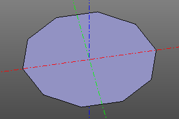
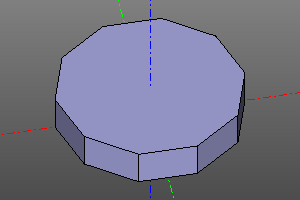
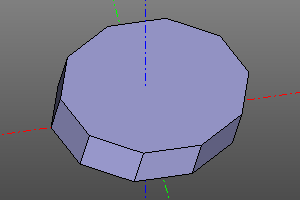
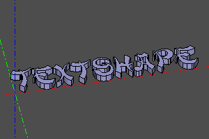
Loft
Операция натягивает 3д поверхность на масив каркасных линий wires.
TODO: Добавить больше параметров в алгоритм сглаживания.
loft(wires)
 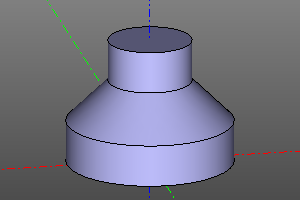
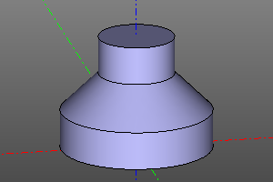
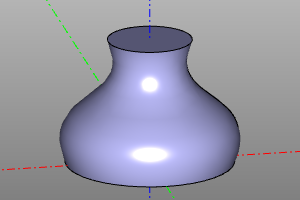
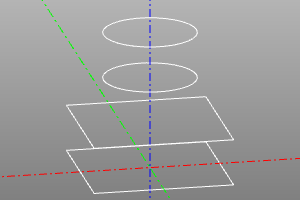
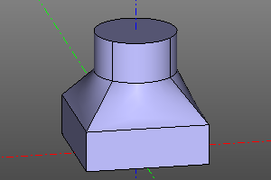
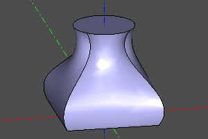
Sweep
Операция выдавливания тела shp по траектории. В текущей реализации профиль задаётся замкнутым контуром. Путь path задаётся линией. При установке опции frenet меняется алгоритм расчета поворота сечения от поворота траектории. Эту опцию рекомендуется устанавливать для спирального свипа (см. https://en.wikipedia.org/wiki/Frenet-Serret_formulas).
sweep(proto=profile, path=trajectory, frenet=True/False)
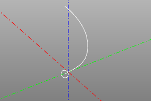
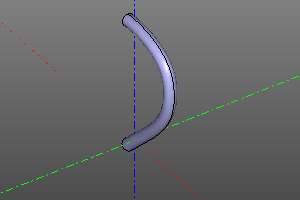
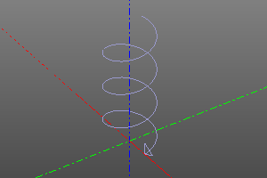

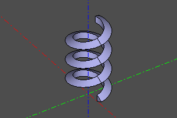
Revol
Операция создания тела вращения. Задаётся с указанием вращаемого тела. При необходимости создания сектора задаётся угол.
revol(proto=model, yaw=angle)
revol(proto=model)
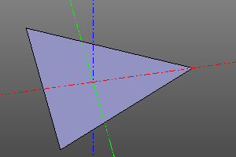
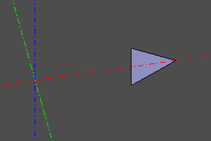
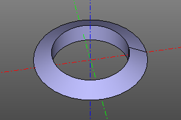
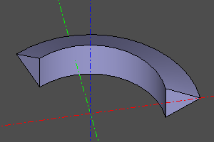